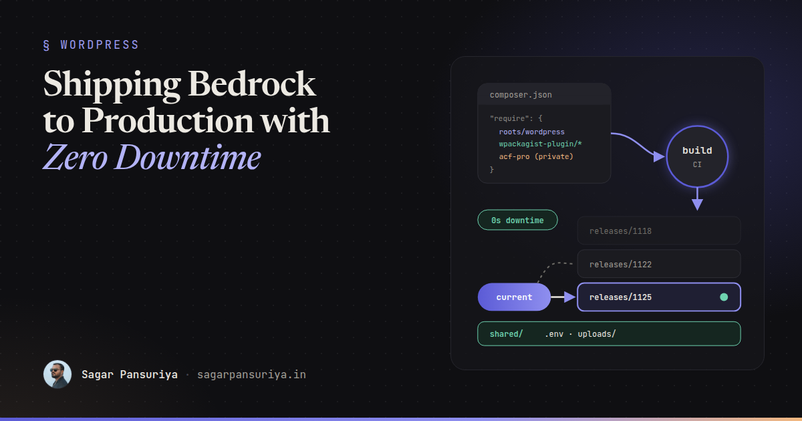
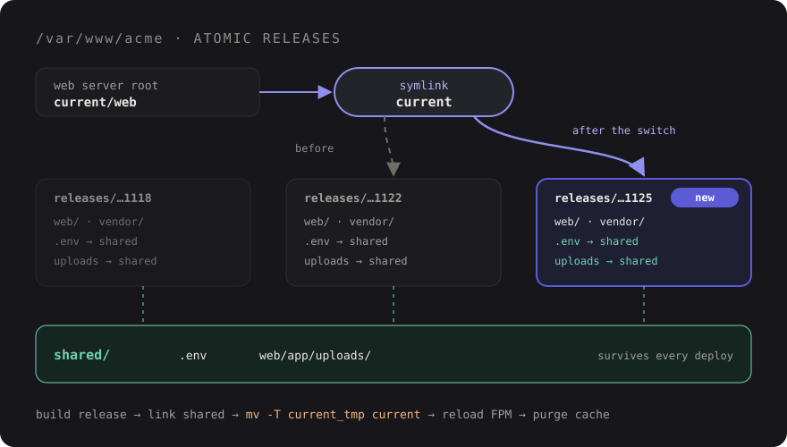

Bedrock in Production: Composer Plugins, Env Config and Zero-Downtime Deploys


You've probably inherited a WordPress site like this. Someone deploys by dragging files over SFTP, plugins get updated from the admin on a Friday afternoon, and nobody is quite sure which version of WooCommerce is running on production versus staging. Then one update half-applies, the site shows a white screen for ten minutes, and everyone swears they'll "do it properly next time".
Bedrock is how I do it properly. It's the Roots project's WordPress boilerplate: Composer manages core and plugins, configuration lives in environment variables, and the web root is separated from everything that shouldn't be public. I covered the day-to-day development side in my post on Sage and Bedrock. This one is about the part that post only touched on: getting a Bedrock site onto a server and keeping it healthy there.
We'll go through environment config, plugins with Composer (including premium ones), the mu-plugins autoloader, zero-downtime releases, caching, and a deploy script plus a GitHub Actions workflow you can adapt.
What makes Bedrock different in production
A quick refresher on the layout, because every deploy decision follows from it:
site/
├── .env # secrets and per-environment values (never committed)
├── composer.json # core, plugins, themes as dependencies
├── config/
│ ├── application.php # the main config, reads from .env
│ └── environments/
│ ├── development.php
│ ├── staging.php
│ └── production.php
├── vendor/
└── web/ # the only folder the web server should see
├── app/ # what wp-content used to be
│ ├── mu-plugins/
│ ├── plugins/
│ ├── themes/
│ └── uploads/
├── wp/ # WordPress core, installed by Composer
├── index.php
└── wp-config.php # tiny, just loads config/application.phpThree consequences matter for production. Your document root is web/, not the project root, so .env, composer.json and vendor/ are never reachable over HTTP. Core and plugins are rebuilt from composer.lock on every deploy, so they don't belong in Git. And uploads/ is the one folder that holds real state, which is exactly what you need to protect during a release.
Environment config: .env plus environment files
Bedrock reads its settings from a .env file (or real environment variables, if your host sets them). A production file looks roughly like this:
DB_NAME='acme_prod'
DB_USER='acme'
DB_PASSWORD='a-long-random-string'
DB_HOST='127.0.0.1'
WP_ENV='production'
WP_HOME='https://acme.example'
WP_SITEURL="${WP_HOME}/wp"
# Generate fresh salts per environment
AUTH_KEY='...'
SECURE_AUTH_KEY='...'
# ...and the rest of the saltsWP_ENV is the switch. config/application.php holds the defaults, then loads config/environments/{WP_ENV}.php to override them. Out of the box, Bedrock already makes production strict: file editing and plugin installs from the admin are disabled, and debug output is off. The development file turns debugging on.
I treat the environment files as the place for behaviour, and .env as the place for values. A staging file I often end up with:
<?php
// config/environments/staging.php
use Roots\WPConfig\Config;
Config::define('DISALLOW_INDEXING', true); // keep staging out of search results
Config::define('WP_DEBUG_LOG', true);
Config::define('WP_DEBUG_DISPLAY', false);The rule that saves the most pain: if a value differs between environments, it goes in .env. If a behaviour differs, it goes in the environment file. Nothing environment-specific gets hard-coded in the theme.
Plugins as Composer dependencies
Free plugins and themes from the WordPress.org directory come through WordPress Packagist, a Composer repository that mirrors them. Bedrock's composer.json already has it configured, along with installer paths that drop each package type into the right folder:
{
"repositories": [
{
"type": "composer",
"url": "https://wpackagist.org",
"only": ["wpackagist-plugin/*", "wpackagist-theme/*"]
}
],
"require": {
"roots/wordpress": "^6.8",
"wpackagist-plugin/wordpress-seo": "^25.0",
"wpackagist-plugin/safe-svg": "^2.3"
},
"extra": {
"installer-paths": {
"web/app/mu-plugins/{$name}/": ["type:wordpress-muplugin"],
"web/app/plugins/{$name}/": ["type:wordpress-plugin"],
"web/app/themes/{$name}/": ["type:wordpress-theme"]
},
"wordpress-install-dir": "web/wp"
}
}Treat the version numbers above as placeholders; use whatever composer require resolves for you. What matters is the workflow: plugin updates happen locally with composer update vendor/package, get tested, and the updated composer.lock is what ships. Production never decides for itself which version to run.
Premium and private plugins
This is where most teams give up and commit a zip to the repo. You usually don't have to. In rough order of preference:
- The vendor's own Composer repository. Some premium plugins offer one. ACF PRO is a good example: you add their repository URL and authenticate with your license key. Check your vendor's docs; more of them support this than you'd expect.
- A private Git repository. Put the plugin in its own repo with a small
composer.json("type": "wordpress-plugin") and add it as avcsrepository. Updating means committing the new version there and bumping the tag. - A private package server. For agencies with dozens of premium plugins, hosting your own Composer repository (Satis, or a WordPress-based option) keeps every site's
composer.jsonclean.
Credentials for any of these go in auth.json locally (add it to .gitignore) and in a COMPOSER_AUTH secret in CI. Never in composer.json.
{
"http-basic": {
"connect.advancedcustomfields.com": {
"username": "YOUR-LICENSE-KEY",
"password": "https://acme.example"
}
}
}mu-plugins and the autoloader
WordPress only loads PHP files sitting directly in mu-plugins/, not plugins inside subfolders. Bedrock ships an autoloader mu-plugin that fixes this, so any regular plugin installed into web/app/mu-plugins/ gets loaded as must-use. That's useful for plugins that must never be deactivated from the admin: your site's custom functionality plugin, an object cache integration, a security or SMTP plugin. Set the package type to wordpress-muplugin, or add it to the installer path by name:
"web/app/mu-plugins/{$name}/": [
"type:wordpress-muplugin",
"wpackagist-plugin/wp-mail-smtp"
]Zero-downtime deploys with atomic releases
The classic mistake is running git pull && composer install inside the live folder. For the thirty seconds Composer takes, the site runs a mix of old and new code. If Composer fails halfway, it stays that way.
The fix is the release-directory pattern. Every deploy builds a complete, fresh copy of the site in its own folder. Anything that must survive across deploys lives in a shared/ folder and is symlinked in. When the new release is ready, a single symlink called current is switched to point at it. The web server's document root is current/web.

Switching a symlink is effectively instant, so visitors either get the old release or the new one, never a mix. Rolling back is pointing current at the previous folder. Tools like Deployer and Roots' own Trellis implement exactly this pattern, and if you're starting fresh, either is a solid choice. It's still worth knowing what they do under the hood, so here's a plain shell version.
A minimal deploy script
This runs on the server after CI has uploaded a built release (theme assets compiled, vendor/ installed) into releases/$RELEASE:
#!/usr/bin/env bash
# deploy/activate.sh RELEASE_ID
set -euo pipefail
APP=/var/www/acme
RELEASE="$APP/releases/$1"
# 1. Link shared state into the new release
ln -sfn "$APP/shared/.env" "$RELEASE/.env"
rm -rf "$RELEASE/web/app/uploads"
ln -sfn "$APP/shared/uploads" "$RELEASE/web/app/uploads"
# 2. Run anything that needs the new code, before it goes live
cd "$RELEASE"
wp core is-installed # fails fast if .env or the DB is wrong
# 3. Atomic switch: create a temp link, then rename it over "current"
ln -sfn "$RELEASE" "$APP/current_tmp"
mv -Tf "$APP/current_tmp" "$APP/current"
# 4. Post-switch housekeeping
wp core update-db
wp cache flush
sudo systemctl reload php8.3-fpm # clear OPcache and the realpath cache
# 5. Keep the last five releases for rollbacks
ls -1dt "$APP"/releases/* | tail -n +6 | xargs -r rm -rfTwo details are easy to miss. First, mv -T over an existing link is a rename, which is atomic, while ln -sfn directly on current removes and recreates it. Second, PHP caches resolved paths and compiled scripts, so after the switch PHP-FPM may keep serving the old release. Reloading FPM handles it; alternatively, configure Nginx to pass $realpath_root instead of $document_root in SCRIPT_FILENAME so each request resolves the symlink fresh. Adjust the FPM service name to your PHP version.
A GitHub Actions workflow
The build happens in CI, not on the server. The server should never need Node, and ideally not even Composer credentials.
# .github/workflows/deploy.yml
name: Deploy production
on:
push:
branches: [main]
jobs:
deploy:
runs-on: ubuntu-latest
steps:
- uses: actions/checkout@v4
- uses: shivammathur/setup-php@v2
with:
php-version: '8.3'
- name: Install PHP dependencies
env:
COMPOSER_AUTH: ${{ secrets.COMPOSER_AUTH }}
run: composer install --no-dev --optimize-autoloader --no-interaction
- uses: actions/setup-node@v4
with:
node-version: 22
- name: Build theme assets
working-directory: web/app/themes/acme
run: |
npm ci
npm run build
- name: Upload and activate release
env:
SSH_KEY: ${{ secrets.DEPLOY_SSH_KEY }}
HOST: ${{ secrets.DEPLOY_HOST }}
run: |
install -m 600 /dev/null ~/.ssh_key && echo "$SSH_KEY" > ~/.ssh_key
RELEASE=$(date +%Y%m%d%H%M%S)
rsync -az --delete -e "ssh -i ~/.ssh_key -o StrictHostKeyChecking=accept-new" \
--exclude='.git' --exclude='node_modules' --exclude='.env' \
./ deploy@$HOST:/var/www/acme/releases/$RELEASE/
ssh -i ~/.ssh_key deploy@$HOST "bash /var/www/acme/releases/$RELEASE/deploy/activate.sh $RELEASE"If your theme is Sage, the build step compiles assets with Vite into the theme's public/ folder, and those built files need to be in the upload even though they're gitignored. That's why the build runs before rsync. Pin the host key properly once you're past the prototype stage instead of relying on accept-new.
Caching that survives deploys
Separate your caches by what they store, because each one needs different handling on deploy:
| Layer | Typical setup | On deploy |
|---|---|---|
| OPcache | On, with timestamp validation off in production | Reload PHP-FPM |
| Object cache | Redis with an object-cache drop-in | wp cache flush if data structures changed |
| Page cache | Nginx FastCGI cache, a caching plugin, or a CDN | Purge after the switch, not before |
| Static assets | Long cache headers, hashed filenames from Vite | Nothing: new hashes, new URLs |
Purging the page cache before the symlink switch is a subtle bug: the first visitor after the purge can re-warm it with the old release. Always purge last. And because Bedrock disables admin plugin installs, your object cache drop-in should come from Composer like everything else.
A production checklist
- Document root points at
current/web; nothing above it is web-accessible. .envlives inshared/, with unique salts per environment andWP_ENV=production.- Every plugin, including premium ones, installs from
composer.lock. No zips in Git. - Composer credentials live in
auth.jsonlocally andCOMPOSER_AUTHin CI. - Must-never-deactivate plugins are installed as mu-plugins.
- Assets and
vendor/are built in CI; the server only receives finished releases. - Releases switch with an atomic rename, followed by an FPM reload (or
$realpath_root). uploads/is shared and backed up separately from the code.- Page cache is purged after the switch; the last few releases are kept for instant rollback.
None of this is exotic. It's the same discipline Laravel teams take for granted, applied to WordPress. Once it's in place, a plugin update stops being a Friday-afternoon gamble and becomes a boring pull request, which is exactly what it should be.
Discussion